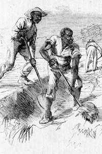
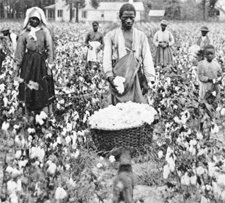
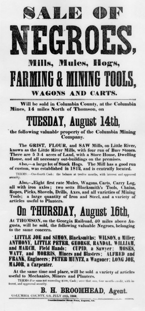
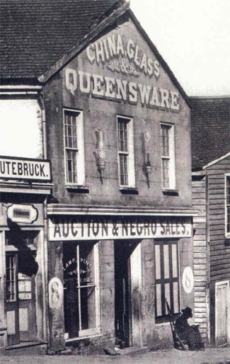

|
During the 1730s, when England's other South Atlantic colonies had irrevocably
committed themselves to black bondage and plantation agriculture, British
philanthropists founded Georgia as an experiment in diversified small-scale
enterprise through free white labor. Having banned troth slavery and large
landholdings, the Georgia Trustees waged an abortive seventeen-year struggle to
create a wilderness utopia where indigent Englishmen could become tradesmen or
thrifty yeomen, producing raw materials for the mother country and defending
nearby South Carolina against the Spanish and Indians. Although the plan defied
conventional wisdom, it was not entirely implausible. Virginia had prospered
without slavery during its initial stages of development, and viable,
town-oriented societies of artisans and small farmers existed elsewhere in
eighteenth-century North America. Certain individuals and groups did, in fact,
achieve modest prosperity under trustee rule, but in comparison to the older
plantation colonies, Georgia languished. Population grew slowly and lucrative
export commerce failed to materialize. Mounting domestic criticism caused the
trustees to drop landholding restrictions during the 1740s, and finally in 1750,
to permit slavery, subject to various humanitarian restrictions that were
quickly brushed aside.
|

A. R. Waud's sketch Rice Culture on the Ogeechee, Near
Savannah, Georgia depicts slaves working in the rice fields.
|
One recent scholar has characterized the repudiation of trustee period
antislavery policy as the "great tragedy" of Georgia's early history. Certainly
the decision had tragic implications for the approximately 15,000 black people
born or brought into the colony during the quarter century before the American
Revolution. Overwhelmingly, they were destined for lives of drudgery on coastal
rice plantations, producing the staple exports that would stimulate Georgia's
economy while concentrating wealth and power into the hands of an emerging
planter elite. For fifteen years after slavery's legalization the black
populations grew slowly. In July 1750 Governor James Wright reported the
presence of some 349 adult "working negroes" plus an unspecified number of young
children. Between that year and 1765 some 637 slaves arrived in Georgia ports
from Jamaica, St. Christopher, and other West Indian islands. A much larger
slave influx of more than 1,200 came from neighboring South Carolina, which also
supplied many white migrants anxious for new opportunities in rice planting.
After 1765 the pace of slave importation quickened as nearly 11,000 slaves
poured into Georgia from various sources. Nearly half came directly from Africa
into the ports of Savannah and Sunbury, while another 3,000 more or less were
purchased from South Carolina. As had been true before 1765, many if not most of
the slaves obtained from South Carolina were newly arrived Africans reexported
by Charleston merchants to Georgia customers.
The demography of the African slave trade had a major impact on black life
and culture in pre-revolutionary Georgia. When the first statistics on slave
population were reported in 1750, adult black men outnumbered women by roughly
25 percent, and for at least a generation the unbalanced sex ratio persisted.
Responding to the labor demands of Georgia's emerging plantation system, local
merchants sought African cargoes containing approximately two adult males for
each female between the ages of fourteen and twenty-five. The resulting scarcity
of black women had a blighting effect on slave family life and probably
inhibited the preservation of African cultural norms, particularly those
religious concepts most directly related to ancestor worship and a belief in
reincarnation. Low rates of black population growth during the early decades can
be attributed largely to the predominance of men in the work force, although the
long period of breast feeding and the consequent child spacing common to some
West African polygamous societies also helped depress slave birthrates.
Ethnographic generalizations about Georgia's eighteenth-century Africans are
risky at best, but available evidence suggests that most bondsmen came from
Gambia, Sierra Leone, and other locations along the Windward and Gold Coast.
Angolans, who had comprised the bulk of black immigrants to South Carolina prior
to the 1739 Stone Rebellion, entered Georgia only in small numbers. Common
geographic origins may have facilitated communication among the first generation
of Georgia slaves, and it is likely that overlapping cultural practices from
West Africa provided an element of social continuity that helped offset the
effects of shattered family or tribal bonds. Whites contributed unwittingly to
African cultural persistence by resorting to task labor as the principal means
of plantation management. Introduced to Georgia during the 1750s by migrants
from South Carolina, the task system required each slave to complete a fixed
amount of work, such as hoeing a quarter acre of rice or planting a half acre of
corn, in the course of a single day. White overseers or black drivers (often
called "headmen") normally supervised the field hands, who were allowed to move
at their own pace so long as the stipulated labor assignment was completed and
the work performed in a satisfactory manner. Built around visible and easily
measured units of productivity, the task system required little direct
interaction between blacks and whites. Georgia rice planters saw tasking as a
practical method of extracting systematic toil from a largely unassimilated
slave work force.
Contemporary witnesses showed little surprise when a full decade after
slavery's legalization most Africans remained "new Negroes," possessing little
knowledge of their oppressors' language, mores, or religion. The half dozen
white clergymen who evangelized slaves in colonial Georgia reached only a tiny
fragment of the black population and often made little lasting impression on the
bondsmen who heard their preaching. During the late 1750s, for example, the
Reverend John Solomon Ottolenghe complained that Georgia slaves were "mostly
Africans" who were "as Ignorant of our Language, as we are of theirs." Since no
one could be found to translate white preaching, the blacks had difficulty
"understanding what it is that is offer'd to them in order to forsake Paganism
and embrace Christianity." As a group, the slaves appeared "nurs'd in
extravagant Idolatry," with the "old Superstition of a false Religion ...
riveted by Time'' on their consciousness.
While clinging tenaciously to African belief systems, many colonial bondsmen
also tried to reclaim the personal freedom that whites had taken away. Between
1763 and 1775 some 160 different slave owners sought to recover 453 black
runaways through newspaper advertisements. Native Africans accounted for 75
percent of the fugitives, most of whom were unskilled young male field-workers.
The few skilled and acculturated slaves tended to converge on Savannah where
they might find employment or pass as free. Their behavior contrasted sharply
with that of most absconding Africans who tried to avoid contact with whites by
fleeing toward the coast or backcountry. In the mid-1770s four men and a woman
owned by Governor James Wright actually set out "in a small paddling boat ... to
look for their own country." Apparently Florida held little attraction for local
runaways after the end of the French and Indian War, although prior to 1763
Georgia authorities took extraordinary measures to prevent black fugitives from
joining the Spanish near St. Augustine. Anyone capturing and returning an adult
male slave could collect five pounds sterling, and the scalp of a dead bondsman
would bring one-fifth of that sum, provided both ears were still attached. In
the circumstances, some desperate and resourceful escapees joined the
semipermanent runaway bands that emerged periodically from the swamps north and
east of Savannah to pillage outlying plantations.
The context of black resistance changed appreciably during the turbulent
years of the American Revolution. Opportunities for freedom expanded and took
new forms, familiar authority structures weakened or collapsed, and at times,
slaves played an active role in the military struggle between Tories and Whigs.
Agriculture was among the war's first casualties, laid low by the early
departure of many loyalist planters and the subsequent chaos of armed conflict
along the seaboard and in the backcountry. When royal governor Wright fled the
province in February 1776, he met several hundred black runaways outside
Savannah and arranged for their departure on British vessels. For the next
several years Georgia's slave population dwindled as bondsmen slipped away from
poorly supervised plantations or accompanied their owners to other colonies. By
1780 a combination of physical damage and labor scarcity had eliminated the
colony's annual rice exports (estimated at 20,000-25,000 barrels before the war)
and left local residents with only one-tenth that amount for domestic
consumption.
As the plantation system ground to a halt, both the British and Americans
mobilized Georgia blacks to build fortifications and perform other kinds of
military labor. Each side confiscated slaves owned by "the enemy" and impressed
bondsmen belonging to friendly masters. Probably most black Georgians felt
little true attachment to whites on either side of the conflict, although two
dramatic instances of slave assistance to the redcoats suggest a tendency
(however unwarranted) to identify Britain with the cause of emancipation. In the
winter of 1778-1779 an elderly black man named Quamino (or Quash) Dolly guided
Colonel Archibald Campbell's 3,500 British troops through the coastal swamps as
part of a successful surprise attack on the rebel garrison in Savannah. Nine
months later when French and American forces tried to retake the city, the
British armed some 200 local blacks to help repel the attack. Although Georgia's
colonial militia laws authorized arming slaves and freeing them for acts of
valor, most white loyalists had no intention of liberating Savannah's black
defenders. On the contrary, local authorities moved quickly to disband the black
company as soon as the emergency had passed. Whether because of the black
soldiers' example or simply as a result of prevailing social disorder, armed
gangs of slaves refused to give up their weapons after the siege was raised and
continued to terrorize Savannah and its outskirts for several months. After the
war ended, moreover, a group of 200-300 armed blacks calling themselves the
"King of England's soldiers" established a fortified village in Belle Isle Swamp
where they remained until 1786 when their camp was destroyed by state militia.
If the war bequeathed a legacy of maroon communities to coastal Georgia, it
also created an acute labor shortage for white plantation owners. The number of
slaves removed during the British evacuation of Savannah in 1782 has been
variously estimated at between 3,500 and 6,000, or some 25 percent of the
state's pre-revolutionary black population. When this figure is added to
previous wartime slave losses resulting from theft, desertion, escape, death,
and removal, the Revolution's demographic impact on the plantation system takes
on an ironic significance. In Georgia, at least, the outcome of a war fought in
the name of liberty and republican values all but ensured that victorious white
patriots would proceed to negate human freedom by reopening the African slave
trade. Between 1784 and 1799 almost 7,600 slaves entered Georgia from foreign
sources, with all but 638 arriving during the 1790s. At first they came in small
groups including many "seasoned" bondsmen from the West Indies, but in 1793 the
black uprising in Saint-Domingue caused state lawmakers to ban further imports
from the islands. For the next five years Rhode Island slave traders like James
D'Wolf and Cyprian Sterry sold white Georgians nearly 4,800 black men and women
form Sierra Leone, the Gold Coast, and other portions of West Africa. Even after
Georgia closed the foreign slave trade in 1798, Africans continued to enter the
state from South Carolina, where slave ships made regular stops for the next
eight years. Taking note of the influx in 1799, a Georgia grand jury concluded
that the "narrow channel of the Savannah River will never, like the Chinese
wall, be found an ample barrier" against illegal African importation.
|

A Georgia cotton field
|
Georgia's postwar resumption of the African trade occurred at a time when
slavery as an institution was entering upon a period of geographic expansion,
economic reorientation, and sociocultural change. On the eve of the Revolution
chattel bondage had been confined almost entirely to the seaboard, with only a
handful of black laborers dispersed among interior farms and plantations as far
north as Augusta. Colonial era up-country slaves lived in small, isolated units
and performed a variety of jobs associated with the production of corn, small
grains, livestock, tobacco, and indigo. Yeomen subsistence farms predominated in
more remote interior regions during the early years of settlement, although a
few slaves were present in even the newest frontier areas. When occupation of
Georgia's western lands resumed after independence, slave-owning planters,
including many immigrants from the upper South, played a conspicuous pioneer
role. Arriving early with slaves, capital, and valuable political connections,
such Virginia newcomers as the Gilmers, Lewises, Harvies, Meriwethers, Markses,
Mathewses, Crawfords, Taliaferros, and others vied with Scotch-Irish plain folk
from the Carolina backcountry for control of choice farmland north and west of
Augusta. For more than a decade moderate size tobacco plantations coexisted with
a prevailing system of family-based subsistence agriculture in what would later
become the eastern counties of Georgia's lower piedmont. After 1800, however,
cotton rapidly displaced tobacco as the chief staple crop, yielding profits that
invigorated the plantation system and propelled its steady advance. During the
next three decades recurrent waves of Indian removal and white expansion carried
cotton and slavery southwestward across a broad swath of central Georgia between
the northern hill region and the pine barrens and wiregrass land to the south.
Black majorities became common in the new plantation belt, and by 1840 the
state's slave population had risen to over 28O,000, more than a fourfold
increase since the turn of the century. Growth slowed in percentage terms as the
base of calculation became larger, but more than 180,000 additional bondsmen
were present in Georgia when the antebellum era ended. Representing 44 percent
of the state's total population by 1860, slaves were concentrated along the
seaboard and in the interior cotton counties where a newly arisen planter elite
shaped the economic and political destiny of Georgia's 41,000 white families,
nearly two-thirds of whom owned no slaves.
By enlarging Georgia's planter class and broadening its social base, the rise
of the Cotton Kingdom helped legitimate slavery among less affluent whites,
thereby sealing the fate of at least three generations of antebellum blacks. At
the same time, however, the spread of plantations from tidewater to up-country
wrought profound changes in Afro-American life and established new contexts for
master-slave relations. By the 1820s, if not sooner, the numerically typical
Georgia slave ceased to be a young, unassimilated male African engaged in rice
production, and became instead an American-born man or woman of African descent,
whose attachments to family and fellow bondsmen lent a certain coherence to
daily life in the Cotton Belt. What took place in the older sections of the
Georgia piedmont during the decades following the Revolution was a complex
process of social interaction between survivors of the Middle Passage,
native-born slaves from the upper South, and white masters or overseers.
Standing as crucial intermediaries between local planters and newly enslaved
Africans were the thousands of bondsmen from other states who arrived in Georgia
bearing the hyphenated Afro-American cultural forms which had taken shape in the
Chesapeake hearth area during the mid-eighteenth century. These thoroughly
acculturated black immigrants affected and were in turn influenced by the
Africans with whom they came in contact.
|

An advertisement for the sale of slaves in Georgia
|
Cultural formation occurred through a series of syncretic borrowings and
face-to-face encounters like those which took place in Oglethorpe County during
the 1820s on the plantation of William H. Crawford. A white neighbor recalled
that Crawford owned four native Africans who frequently kept company with a
fifth "rather more Americanized" countryman on an adjoining farm. Still bearing
tribal scars upon their faces, the aging bondsmen would talk for hours of the
"fierce wars which had raged between hostile princes in their native country."
Groups of American-born slaves listened to the stories with "staring eyes, open
mouths, and peculiarly respectful attitudes." Unschooled in the rituals of
paternalist deference, the Africans had evolved a pragmatic modus vivendi with
their Georgia masters. As captives, the men accepted the obligation to serve
their captors, so long as white demands did not appear capricious. Only when a
"misunderstanding" arose about "some matter of business betwixt them and the
overseer" did they become "refractory." Punishment in such instances was of no
avail because rather than fleeing or submitting, the Africans stood their ground
doggedly, "like Roman or British soldiers." Hardly subservient figures, they
remained "exclusive and somewhat unapproachable" at the personal level, and were
treated with "marked respect by all the other negroes for miles and miles
around."
It was partly through the melding of African and Anglo-European folkways into
hybrid forms of music, dance, speech, religion, and group ethics that black
Georgians defined themselves as a people. But specific labor needs and
structural features of the state's economy also helped determine what it meant
to be a slave. Along the coast where geography and specialized agricultural
skills discouraged population interchange with the Cotton Belt, the cultural
legacy of Africa and the Afro-Caribbean gave a distinctive ambience to slave
life. Planter absenteeism slowed the pace of acculturation, while the extension
of task labor to nearly all agricultural operations allowed blacks the "free"
time to raise livestock and provision crops for domestic consumption or local
sale. By the late antebellum era de facto ownership (and even inheritance) of
personal property had developed among low-country bondsmen, whose limited
commercial activities fostered a social outlook with certain peasant-like
overtones.
Greater regimentation and closer white supervision were central features of
the gang system of labor organization that prevailed throughout the Cotton Belt
where the vast majority of black Georgians spent their lives. In this typical
antebellum setting slavery became an institution that simultaneously forced
human beings together and drove them apart. For whites, a combination of ethnic
chauvinism and paternalist dogma created the mental distance that made physical
intimacy with slaves acceptable. Blacks, on the other hand, found exposure to
whites hazardous and personally humiliating. The ritualized deference exacted by
members of the ruling race impelled most blacks to a kind of self-segregation.
Slaves routinely sought psychological refuge by withdrawing to rural slave
quarters, urban fringe areas, and emerging "African" churches or less formal
religious gatherings. In the process they fostered a kind of racial separation
as profound in some ways as any later imposed from above by white supremacist
Jim Crow legislation.
By choice and through necessity, black Georgians became a people apart during
the years of slavery. Vulnerability quickened the pace of their strategic
retreat from the white world and bequeathed a legacy of ambiguous ethnocentrism
to the generation that would make the transition from slavery to freedom. By
adopting a posture of outward subservience and defensive racial exclusiveness,
bondsmen minimized the inner damage of slavery, but they could not escape its
pain. Instead of infantile personalities, Afro-Americans developed a fine
sensitivity to human limits. Through a supple expressive culture they were able
to dispel anger and frustration, articulate forbidden aspirations, and sustain a
rich fantasy life. Yet, for all its vitality, slave culture exhibited a deep
ambivalence, an unstable dualism growing out of the tension between what blacks
felt justified in desiring and the much different reality that slavery forced
them to accept. The message conveyed through music, folktales, and other oral
lore was complex but on some points remarkably consistent. The weak might
confound the strong through cunning or artifice. The rabbit might win a skirmish
with the fox, but the antagonists would retain their respective roles of prey
and hunter. A degraded and scorned member of the animal kingdom could harbor
secret longings and, at times, even aspire to greatness. But to stray too far
from the conservative folk norm--to "get above" one's self--was to invite
disaster. The portrait of life drawn in black folklore was, on the whole, quite
uncompromising. Frequently its honesty was chilling. Happy endings were a luxury
those at the bottom could not afford.
|

This Atlanta firm specialized in the selling of slaves
|
The growth of cities and industries introduced a new element in Georgia's
racial equation during the generation preceding the Civil War. By 1860 over
37,000 bondsmen lived in towns or villages whose population exceeded 1,000
residents. More than half the non-rural slaves could be found in Georgia's five
largest towns--Savannah, Augusta, Columbus, Atlanta, and Macon--which ranged in
size from 22,299 to 8,247 inhabitants. Slavery did not break down in an urban
environment, but it did become a different kind of institution, less
master-oriented and paternalistic and more bureaucratic and cosmopolitan than in
the countryside. As town slaves interacted with literate free blacks and black
artisans and entrepreneurs, or when they attended semiautonomous black churches
with "colored" ministers in the pulpit, their mental universe expanded to
include new strategies and aspirations. Bondage weighed heavily on the human
spirit in any setting, but if the plantation world emphasized slavery's
restrictions, urban life exposed its possibilities.
In almost any crossroads hamlet during the 1840s and 1850s one might
routinely have encountered quasi-independent town slaves who lived apart from
white owners and "hired their own time." After remitting a stipulated sum to
masters, the blacks thus situated could keep any additional income derived from
day labor or other employment. Similar economic opportunities were available to
Georgia's 12,000-24,000 "industrial" slaves, a diverse group of manual laborers,
skilled and semiskilled factory hands, plantation craftsmen, urban artisans, and
workers in crop processing or extractive enterprises. Whatever their specific
job or skill level, nonagricultural bondsmen usually had some access to a system
of task labor that included incentive payments for extra work. A minority of
black Georgians hoped eventually to purchase their freedom through "overwork"
and self-hire arrangements, but tragically few succeeded in the all-but
impossible quest. Most bondsmen settled for more immediate and limited financial
rewards within a framework of continuing servitude, perhaps nurturing dreams of
freedom that were made more vivid by the exploits of successful black fugitives
like John Brown (formerly "Fed" owned by Thomas J. Stevens) and William and
Ellen Craft of Macon, who reached the North and attacked Georgia slavery in
book-length autobiographies.
More than rising slave prices and white pursuers stood between Georgia's
black folk and liberty. There were legal obstacles even to acts of manumission
by individual masters. Responding to the pressures of militant proslavery
sectionalism and pseudoscientific racialist dogma, antebellum politicians closed
off all avenues to domestic emancipation in a series of laws and court decisions
between 1818 and the Civil War. When Georgia adopted its first separate penal
code in 1833, slaves received virtually no civil rights but labored under a long
and growing list of racially discriminatory criminal statutes and restrictions
on personal conduct. Anticipated slave uprisings in each antebellum decade
triggered periods of fierce repression that juxtaposed mob violence with zealous
law enforcement, and frequently resulted in still more restrictive state
legislation and municipal ordinances. The 1831 Nat Turner insurrection in
Virginia shook white Georgians badly, but the 1859 abolitionist attack on
Harpers Ferry, Virginia, convinced many slave owners that a black uprising was
imminent. In the two year nightmare of racial terrorism which followed, dozens
of Georgia slaves were killed or tortured while the liberty of the state's
miniscule free black population was placed in jeopardy.
As limits of acceptable dissent over slavery grew narrower, antebellum whites
who questioned black servitude or sympathized with bondsmen had little choice
but to direct their humanitarian impulses into channels which followed the
political contours of plantation society. Between 1817 and 1860 more than
seventy Georgia slave owners freed nearly 1,200 slaves and sent them to Liberia
under the auspices of the American Colonization Society (ACS). In Georgia and
other Deep South states, advocates of colonization labored against mounting odds
to preserve the eroding middle ground of antislavery gradualism. While offering
whites like Richard Hoff and Alfred Cuthbert a way to free their bondsmen
without threatening the rights of other slave owners, the ACS sought black
support by depicting emigration as a route to racial equality. Attracted by the
egalitarian themes in colonization writing, Georgia slaves like William Moss and
Harrison Berry drew upon ACS accounts of the African past for a sense of hope,
racial pride, and historical identity.
From at least the mid-1840s onward organized religion became a vehicle for
ameliorative reform as clergymen like Charles Colcock Jones expounded an
elaborate biblical rationale for slavery, rooted in doctrines of paternalist
reciprocity and Christian stewardship. By embracing proslavery theology, many
masters convinced themselves that ownership of human beings was ethically
defensible (if not actually "right"), but the price for such moral validation
was an enlarged concept of paternalism's self-imposed obligations. In Georgia,
as elsewhere, the religious defense of slavery gradually filled the void created
by the stillbirth of Southern abolitionism. In time, a substantial minority of
white ministers and laymen came to view themselves as benevolent agents working
for the spiritual and cultural uplift of inferior black dependents. The
evangelical program to legalize black education, protect slave families, and
foster participatory church membership produced more rhetoric than action, and
did not imply a larger commitment to racial equality. It did, however,
constitute an affirmation of the common humanity of blacks and whites, as well
as a conscious rejection of the slave regime's most callous and destructive
tendencies.
The latent contradictions within Georgia's slave system became manifest only
during the bloody struggle for southern independence. In the post-secession
euphoria of 1861 white Georgians seemed ready to put aside philosophical
differences and unite in defense of the peculiar institution. For a brief moment
the future of slavery appeared secure, but wartime circumstances gradually
undermined the foundations of black subordination and shattered the illusion of
master class solidarity. From 1862 onward the diversion of slave labor from
agriculture to industry, the removal of bondsmen from invaded regions to inland
farms and cities, the conscription of masters or overseers, and the growing
reliance upon women to supervise planting operations, all helped redefine the
context of black-white interaction. With a consistency apropos to a democratic
revolution led by slave-owning conservatives, the struggle for Confederate
nationhood pulled domestic race relations in opposite directions. Between 1859
and 1865 campaigns of racial repression and acts of unparalleled barbarity
toward blacks went hand in hand with religiously motivated efforts to ameliorate
slavery and expand the legal rights of bondsmen. In a similar fashion, the
changes associated with wartime urbanization, industrialization, and refugee
life produced both benefits and disadvantages for the black people involved.
Opportunities to alter plantation routine, to escape white surveillance, and to
gain economic bargaining power were often achieved at the expense of family
separation and loss of direct access to free territory. Hard-pressed masters
became more tolerant of independent behavior among blacks but they also
abandoned an increasing number of paternalism's self-imposed obligations.
For some black Georgians the war did, of course, bring escape from slavery,
but the freedom obtained behind Union lines was often less complete and more
exploitative than justice would have dictated. Ambiguity also surrounded the
triumph of Northern arms during the 1864 Sherman invasion. Blacks had reason to
look askance at Yankee liberators who often appeared as hostile to blacks as to
slavery itself. The obvious bigotry of some federal troops helped dampen the
enthusiasm of slaves for the Union cause and may, in the long run, have
reinforced the already profound alienation that many freedmen felt toward white
society. During the summer of 1865 Georgians of both races stood astride the
boundary of Confederate defeat as they faced an uncertain future amid vivid
reminders of the past. Instead of seeking revenge, most freedmen seemed anxious
to put the past behind them and make a new start. Postwar magnanimity toward
former masters grew out of deeply felt religious values, buttressed by the
knowledge that Southern whites would probably retain control of local affairs
when the Yankees had come and gone. Acutely aware of their long-term
vulnerability, black Georgians looked first to obtaining physical security,
family stability, economic independence, and, when possible, literacy--tangible
elements of freedom that might be preserved in the midst of political defeat and
adversity. For future generations these priorities would become a crucial
antidote to despair.
Source: Randall M. Miller and John David Smith, eds. Dictionary of
Afro-American Slavery (Westport, CT: Praeger, 1997), 293-302.
|